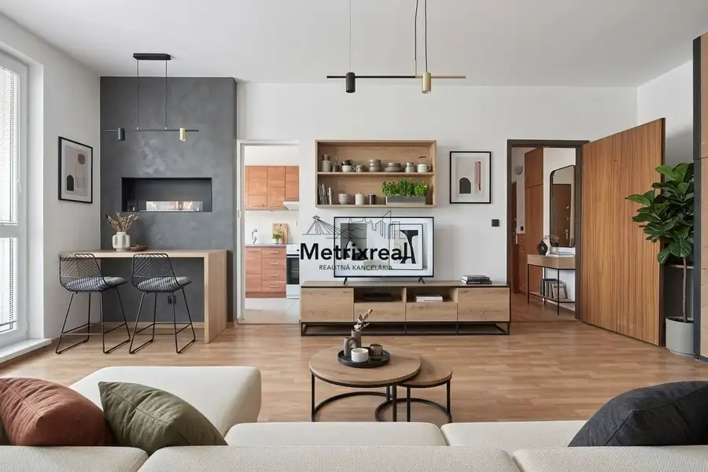
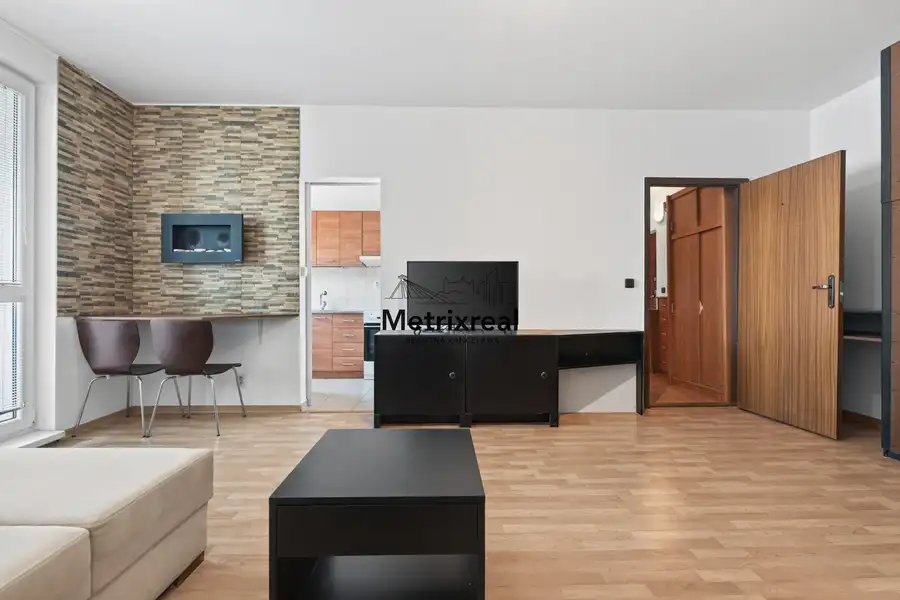
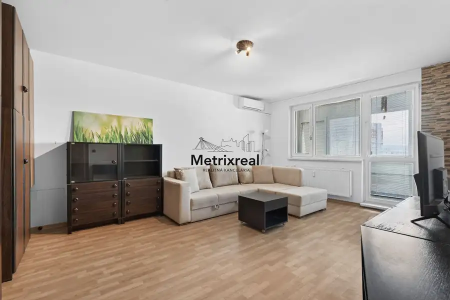
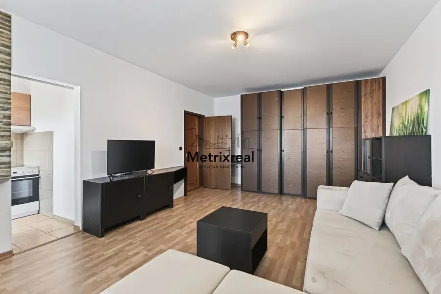
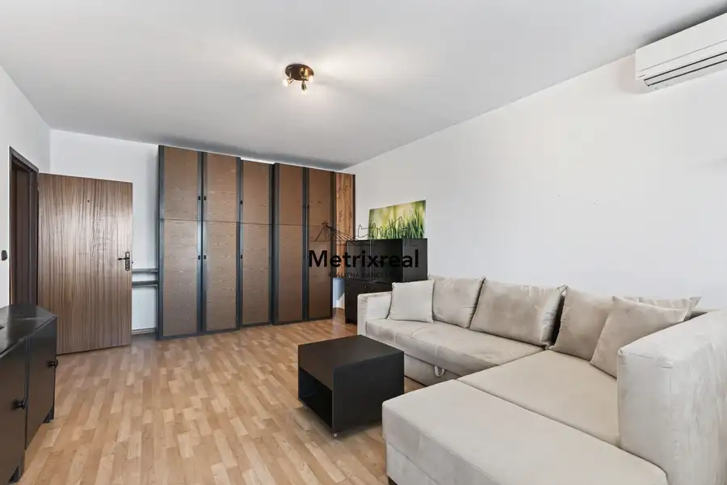
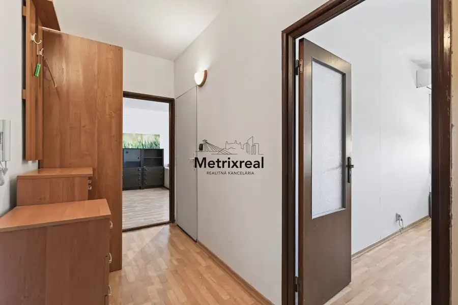
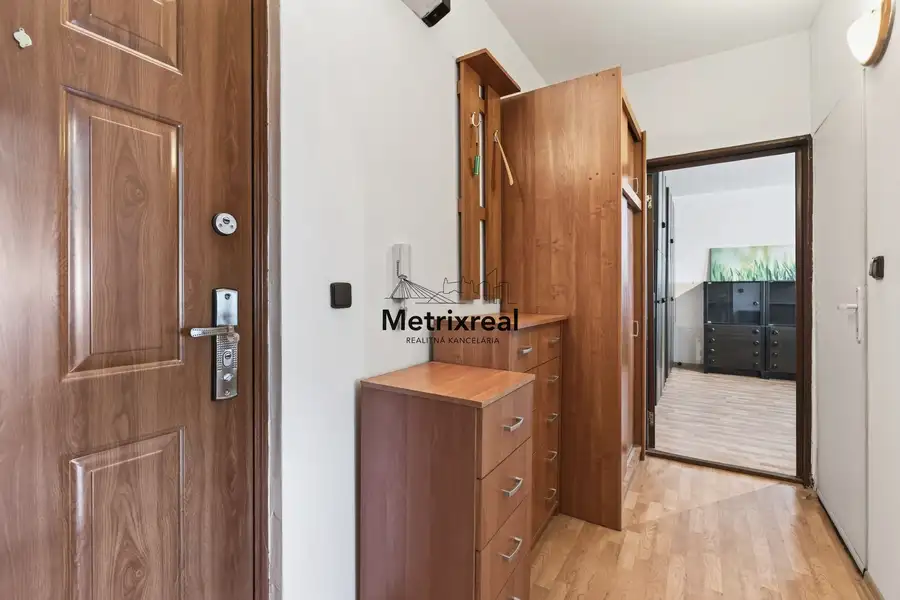

NA PREDAJ: Slnečná 2-garzónka Deluxe s veľkou loggiou + pivnica priamo na poschodí – Nobelovo námestie, Petržalka
Petržalka, Bratislava







- Plocha54.03 m²
- Poschodie7. z 12
- StavČiastočná rekonštrukcia
- VlastníctvoOsobné
O nehnuteľnosti
Realitná kancelária Metrixreal Vám na základe poverenia majiteľa ponúka na predaj svetlú a priestrannú 2-garzónku Deluxe s veľkou loggiou a latkovou pivnicou situovanou priamo na poschodí, nachádzajúcu sa na 7. poschodí z 12 v kompletne zrekonštruovanom a zateplenom bytovom dome na Nobelovom námestí 9 v obľúbenej a vyhľadávanej časti Petržalky.ZÁKLADNÉ PARAMETRE:Celková úžitková plocha: 54,03 m² (byt + loggia + pivnica)Vnútorná podlahová plocha bytu: 48,42 m²Loggia: 3,01 m²Pivnica: 1,30 m² (klasická drevená latková, umiestnená priamo na poschodí)Poschodie: 7. / 12Orientácia: Juhozápad (slnečný a presvetlený byt počas celého dňa)Stav bytu: Čiastočná rekonštrukcia (2018), plastové okná so žalúziami a vonkajšími roletami, pôvodné jadro s obrovským potenciálom na úpravu podľa vlastných predstáv.VÝMERY JEDNOTLIVÝCH MIESTNOSTÍ:Obývacia izba: 25,15 m² (4,22 m × 5,96 m) s priamym výstupom na loggiuSpálňa: 8,43 m² (1,96 m × 4,30 m)Chodba: 6,62 m² (4,11 m × 1,61 m)Kuchyňa: 4,18 m² (1,98 m × 2,11 m)Kúpeľňa s WC: 4,04 m² (1,97 m × 2,05 m)BYTOVÝ DOM A MESAČNÉ NÁKLADY:Kompletne zrekonštruovaný bytový dom: Zateplenie, zrekonštruované spoločné priestory, nové výťahy.Nové stupačky menené v roku 2025.Bezpečnosť: Vstupná brána na čip z oboch strán domu (predný vchod smerom na námestie, zadný vchod priamo na parkovisko).Nízke mesačné náklady: 161 € (správcovské poplatky) + 25 € (zálohové platby za elektrinu). Nakoľko je bytový dom po kompletnej rekonštrukcii, správcovské poplatky sa už nebudú navyšovať a do budúcna budú len klesať.LOKALITA A OBČIANSKA VYBAVENOSŤ:Petržalka je plne vybavená lokalita poskytujúca všetko potrebné pre kvalitný a pohodlný život. Nobelovo námestie patrí k jej najvyhľadávanejším častiam najmä vďaka excelentnej dostupnosti do centra.Dostupnosť: Zastávky MHD v tesnej blízkosti, ako aj rýchle napojenie na mestský obchvat. Do centra mesta je to doslova na skok – len pár zastávok cez most na Zochovu ulicu, odkiaľ ste pešo všade za pár minút. V blízkosti sa nachádza aj Petržalská železničná stanica.Nákupy a služby: Nákupné centrum Aupark, Incheba Expo, obchody, reštaurácie, školy a škôlky.Lokalita pre aktívnych: Bezprostredné napojenie na petržalskú hrádzu a cyklotrasu vedúcu až do Rakúska.CENA NEHNUTEĽNOSTI:205 000 € (Cena je konečná, vrátane provízie RK)Uvedená cena zahŕňa kompletný realitný a právny servis zastrešený advokátskou kanceláriou, autorizáciu zmlúv a správne poplatky spojené s prevodom vlastníckych práv na katastri. Nehnuteľnosť je možné financovať prostredníctvom hypotekárneho úveru.Sme členom Realitnej únie SR, čo pre Vás znamená absolútnu garanciu férového, transparentného a bezpečného priebehu celej transakcie.KONTAKT PRE OBHLIADKU:Miroslav Kadnár – senior realitný maklér (v realitách od roku 2016)Tel.: 0951 778 117E-mail: kadnar@metrixreal.skRealitná kancelária: Metrixreal s.r.o.
Parametre
- Cena vrátane energií
- Nie
- Doprava
- Diaľnica, MHD, Vlak, Cyklistická infraštruktúra
- Druh
- Dvojgarsónka
- Dátum zverejnenia
- 15. 08. 2026
- Energetický certifikát budovy
- nie je
- Orientácia
- Juhozápadná
- Podlažie
- 7
- Počet izieb / miestností
- 3
- Počet lodžií
- 1
- Počet nadzemných podlaží
- 12
- Počet pivníc
- 1
- Počet spální
- 1
- Rok kolaudácie
- 2026
- Rok poslednej rekonštrukcie
- 2018
- Stav nehnuteľnosti
- Čiastočná rekonštrukcia
- Telekomunikácie
- Internet, Optická sieť, Káblová TV
- Typ
- Predaj
- Typ konštrukcie
- Panelová
- Umiestnenie
- Posledné podlažie
- Vlastníctvo
- Osobné
- Vybavenie
- Lodžia, Pivnica, Výťah
- Vybavenie objektu
- Štandardné
- Vykurovanie
- Ústredné
- Zariadenie
- Čiastočne zariadené
- Úžitková plocha
- 54.03 m²
Kde to je


Mohlo by Vás zaujímať
 Komerčné priestoryNové
850 080 €PESTOVATEĽSKÁ | RUŽINOV | Reprezentatívny obchodný priestor 238 m² na prízemí s výkladmi pri IKEA a Avione | Kompletná rekonštrukcia | Bez provízie
Ružinov, Bratislava
238 m²
Komerčné priestoryNové
850 080 €PESTOVATEĽSKÁ | RUŽINOV | Reprezentatívny obchodný priestor 238 m² na prízemí s výkladmi pri IKEA a Avione | Kompletná rekonštrukcia | Bez provízie
Ružinov, Bratislava
238 m²
 Komerčné priestoryNové
751 291 €PESTOVATEĽSKÁ | RUŽINOV | Investičný kancelársky trakt 285 m² (celé 2. NP) s fungujúcimi nájomcami pri IKEA a Avione | Výnos od 1. dňa | Bez provízie
Ružinov, Bratislava
285.12 m²
Komerčné priestoryNové
751 291 €PESTOVATEĽSKÁ | RUŽINOV | Investičný kancelársky trakt 285 m² (celé 2. NP) s fungujúcimi nájomcami pri IKEA a Avione | Výnos od 1. dňa | Bez provízie
Ružinov, Bratislava
285.12 m²
 DomNové
275 000 €Samostatný RD s garážou, slnečným pozemkom a projektom rekonštrukcie – Krajinská ul., Podunajské Biskupice
Podunajské Biskupice, Bratislava
122 m²
DomNové
275 000 €Samostatný RD s garážou, slnečným pozemkom a projektom rekonštrukcie – Krajinská ul., Podunajské Biskupice
Podunajské Biskupice, Bratislava
122 m²